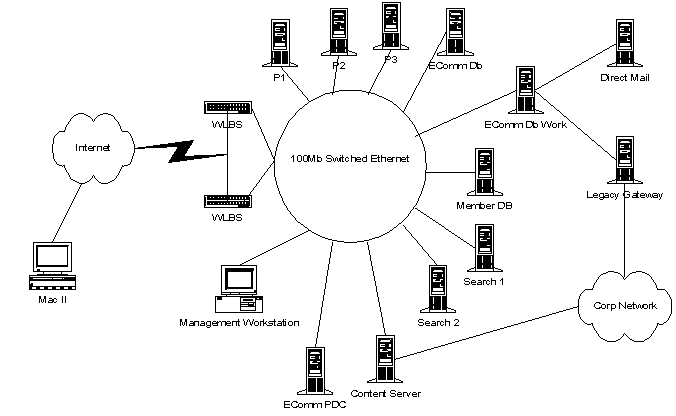

|
| ||
|
| ||
John Gomez
Managing Consultant
Microsoft Corporation
February 10, 1999
Contents
Overview: Our Journey Together
Skills: What You Need to Know to Be
Successful
Plan of Action: Design, Development,
Deployment
Design: Developing the Blueprint for
What You Hope to Build
Baus Coffee: Sample Architecture
Conclusion
But wait: before we get too wrapped up in the glory of the moment, let's ask ourselves some basic questions. Make sure you are honest with yourself as you answer these questions, because it can make the difference between success and failure. Besides, it's only you and me here, and who am I going to tell?
First, have you ever designed, developed, and deployed a mission-critical 99.9 percent fault-tolerant application?Are you confident that you can design and develop application logic that will scale to handle twenty-, thirty- or even fifty thousand transactions a day?
Do you know how to develop performance tests that validate your metrics?
Can you assure that your system is 100 percent secure and not open to outside penetration by hackers?
Do you know how to manage issues like load balancing, system redundancy, and legacy integration?
Chances are that you will answer "No" to most, if not all, the questions. Don't despair: you are in good company because most corporate software developers and consultants are facing the same challenges and issues. The reality is that until recently most of us have not had to deal with or face these unique problems.
This article is the first of a three-part series. It will cover skill sets, provide some handy references, and give you a general plan of action. Then we dive into core issues related to designing an e-commerce platform. We will wrap up by walking through a design for a large-scale e-commerce platform. The second article in this series will focus on development issues, such as code optimization, debugging, source control, database design, performance tips, and more. The last article will cover how we deploy our work of art and manage it in a production environment.
The purpose of this series is to provide you with real-world answers to the questions and issues you will face during the design, development, and deployment of an e-commerce platform. We will examine each phase of the project life cycle and provide detailed information that will have you feeling like an expert in no time. (Actually it will take a little time, but in the end it will be far less time than if you decided to go the path of trail and error.) During our time together, we are going to work hard, sweat a lot, and most of all have fun. Now mind you, the information I present here doesn't come from some textbook, lab, or classroom. It's the real deal - practical information and lessons learned from real-world scenarios. I'll relate has gone well and share embarrassing anecdotes of what sounded good but ended up being major faux pas. So grab the caffeinated beverage of your choice (none for me though - I'm driving), throw on some music with a good beat, kick back and let the journey begin.
In this section I have provided you with a list of some
basic roles for your team. Each role defines the skills,
knowledge, and technologies necessary before starting work
on this project. The structure of your team will vary with
your environment, but I highly suggest you look into the
Micro soft Solutions Framework if you
don't have a framework.
Architect/Design: In some organizations this role might be shared by the project manager, development lead, or technical lead. The purpose of this role is to translate the business requirements to technical requirements that can be used by your developers and quality assurance (QA) group. This person should have a core understanding of Web-based application design, Microsoft® Site Server Commerce Edition architecture, database design, and backup and restore technology. Depending on the project, they should also understand the implications of legacy system integration.
Developer: E-commerce systems usually employ two types of developers: the Web or front-end developer and the component or back-end developer. Web developers should have a strong understanding of Active Server Pages (ASP) technology, Microsoft Visual Basic® Scripting Edition (VBScript), HTML, JavaScript, and a basic understanding of the Component Object Model (COM). The Web developers on your team will be responsible for creating the look and feel of your site, so graphic design may also be an essential requirement.
Your component developers will need to have a very strong understanding of a primary COM development language, such as C++ or Visual Basic. It is important that they understand performance implications related to COM, because a wrong choice can have significant performance implications. In addition, they should understand Transact-SQL. I'm often asked why component developers need to understand scripting if they are primarily going to write COM objects. The reason is simple: by writing script clients they can unit test their own code and save valuable QA time.
The dividing line between the Web developer and the component developer is one of reusability and dynamics. Web developers typically work on the front-end presentation layer of your site, which may change often and is considered highly dynamic. Component developers tend to focus on developing components that interact with legacy systems, encapsulate business rules and logic, access back-end databases, and perform calculations.
Quality Assurance: This is one of the most overlooked areas of any system and usually where the least amount of investment is made. To illustrate how critical it is to have strong QA resources, here is a quick quiz:
What is the difference in consumer expectation between a shrink-wrapped, off-the-shelf software product and an e-commerce system?
Consumers require both products to be stable, or they will take their business elsewhere. Both need to be reliable and provide correct information. Both must be thoroughly tested to avoid potential liability. By now you have figured out that there is no difference. That's why it is imperative to have someone on your team who is well versed in performance measurement, test client development, development of test plans, and management of the QA process in general.
Most articles wait until the end to provide you with resources and references. I'm not sure why this practice evolved, but it's time for a change. Here is a list of references now (instead of last in the series) so that if you are under the gun, already into your third week of development, you can get some help now when you need it the most. If you aren't under the gun this will be a handy place for you to return to when you read the rest of the series and realize you need to dig deeper into a topic.
I should state that this plan of action is a general guideline and not a fully detailed methodology for e-commerce platform development. My purpose here is to provide you with a general framework that you can then apply to your methodology of choice.
Design: Often, site design isn't deep enough. In the development of an e-commerce platform you need to examine how all the pieces fit together and assure that you have agreement by all parties involved. Beneath its appearance, an e-commerce platform is in its purest form a distributed system. At some point you may need to rely on data from other areas of a company, trading partners, or third-party payment services. The interactions of these systems and services can have dramatic implications for your site development. Understanding them up-front and designing for them is important.
Note During a recent project I required that every developer produce a design document detailing their component's design before any coding was started. This may seem like overkill, but it saved us a tremendous amount of time and money because we were able to catch problems up-front. Design is an ongoing process throughout the life cycle of your project!
Development: The development of the system is probably the most fun stage of your project. It's when you get to translate your vision into reality. But it's also when most of the nightmares start as you learn that things don't always work the way you envisioned. During development you should continue the design process, revisiting those areas that are not coming together easily. It is also important to begin QA as soon as possible during this phase.
Deployment: Deployment will more than likely be one of the most frustrating times for your team. It's your chance to actually test the result of your sweat and toil and see your design in action.
The three stages of "design, development, deployment" will often blend together. It is important that you perform deployments to production throughout your project and that you continually revisit the design stage. As you gain feedback from testing and QA, you will need to optimize or rework code. This is a natural part of the journey and you should plan for it rather than be surprised.
We now have a decent understanding of the type of people we need for our project, and a foundation of references in case we get into trouble on our journey. In the next section we'll start to address some of the design issues related to our project and figure out some preliminary answers. Then we'll put our principles into practice by building the architecture for a large-scale e-commerce platform. Now would be a great time to refresh your beverage, grab a sandwich and insert another one of your favorite CDs.
The scope of the project will be one of the most important factors in determining the size of your team, the time it will take to complete the project, and what the business requirements are. You should consider some of the following issues when you initially scope your project:
How will you verify payment?Do you need to support corporate credit cards?
Do you need to support virtual trading or warehousing?
How will product fulfillment be accomplished?
Will you require a non-cookie solution?
What security levels will be required?
Will you need to support back-end integration? If so, how? Can it be batched?
How will you deal with back orders?
Will you support real-time inventory?
How will you manage product returns?
Will you provide online order history?
What promotional support will need to be supported?
What search mechanisms will need to be supported?
What products are you selling? How are the products grouped?
Will you support custom pricing or discounts?
How many customer records do I need to store?
How long will online transaction history be stored?
What is the size of my product catalog?
Although this is not a complete list of issues and questions, it is a good start. Each of these questions relates to issues that will affect how long it will take to successfully deploy your e-commerce site.
It seems that every e-commerce project I work on or hear about has to be delivered yesterday. One thing to consider is how long it will take to integrate your system with either legacy or third-party systems. If you are developing a stand-alone e-commerce platform you may have greater freedom to tackle an aggressive schedule. The best advice I can give you is to make sure that you have the legacy and third-party resources dedicated at the start of your project.
Hint A good idea is to provide the requirements and architecture to your development team after the business unit has signed off. This enables you to use a bottom-up approach to determine how long it will take to complete the project.
Although we spend a lot of time defining our requirements we often don't give enough time to the metrics associated with our requirements. E-commerce systems usually require three critical metrics:
As you can see, the clear definition and quantification of each metric is critical. How you understand and define your metrics can have a great impact on the cost of your system, the architecture you deploy, and your overall design. There is a huge difference in cost and design between a system that truly requires 99.9 percent availability and the loosely stated goal of 99.9 percent availability. When designing your e-commerce system you should focus on the clear definitions of the following metrics, at a minimum:
What are the peak load times during a 24-hour period?What is the total overall daily traffic vs. peak load traffic?
Do you have seasonal or promotional spikes in traffic? What is the spike's upper range?
What is the acceptable planned downtime for the system?
How often will content and product information be updated or changed?
How often will search catalogs be updated?
What is the required response time for: obtaining search results, adding an item to a basket, viewing products, confirming payment information, calculating an order, and verifying inventory levels? What is the third-party and legacy impact of these activities?
In the event of a failure how long will you have to fail over to a backup system?
As you examine each of these questions you should consider how the answers affect your design. Before committing to the defined goals for each metric, you should provide your development team with ample opportunity to think through the development issues associated with them.
When we refer to the platform we are referring to the infrastructure (both hardware and software) that we will deploy as the foundation of our system. Choices made here will help us scope how to approach development and will also have implications related to the deployment and future management of the system. The three main areas to consider when planning a platform are security, server selection, and recoverability.
Typically, most people focus on consumer-to-business security and implement Secure Sockets Layers (SSL) or Secure Electronic Transfer (SET) as a means to safeguard transactions. But we need to broaden our view and understand that due to the distributed nature of e-commerce systems we must address security on several fronts.
Web Security: The utilization of SSL is appropriate for the interaction of the consumer and the Web server, which in our case is Microsoft Internet Information Server (IIS). To add greater flexibility and management, my suggestion is to take advantage of Site Server Personalization and Membership (P&M). Site Server P&M provides support for SSL, cookie authentication, Distributed Password Authentication, and HTML Forms. The ability to create security groups, which map to Microsoft Windows NT® Security, provides a robust architecture and management infrastructure. Remember that in the future an operations team will need to manage the platform and you will either need to provide the management tools or take advantage of pre-built tools such as the Microsoft Management Console, which P&M supports.Component Security: Management of COM components is simplified through the use of Microsoft Transaction Server (MTS), which also provides a way to manage component security. By supporting MTS, we are able to again provide production personnel with a means to manage security through graphical interfaces without having to build our own tools.
Legacy Security: Integration with back-end systems is a constant consideration during our design, but extremely important when considering security. We need to understand how we will gain access to the legacy systems and what policies need to be supported. Microsoft SNA Server provides integrated security to IBM systems. In situations where we are integrating with non-IBM systems such as UNIX, we may need to create our own gateways to these systems. A technique that you may wish to consider is the development of a COM component that handles the interoperability between your e-commerce system and the legacy environment.
Business-to-Business Security: Virtual warehousing, order fulfillment, and trading all rely on secure communications between companies. This trading must take place over a secure means, hopefully utilizing encryption technology. Although we can develop our own mechanisms to facilitate this interaction it is easier to utilize off-the-shelf proven technology. The Commerce Interchange Pipeline (CIP), a part of Site Server, Commerce Edition, provides support for encryption, S/MIME and DCOM as well as a return receipt facility, which is a means for lightweight repudiation.
As you can see there are several considerations to security, which can dramatically impact design. We need to understand the level of security we wish to achieve and the different systems we are interacting with and how they impact our requirements. I suggest that you start with security and work through the issues before design other areas of your system. This will provide a foundation that you can return to as you move forward and decide if other system services and features will work within your security framework.
Once you understand the core designs, have a handle on your metrics, and have a good sense of the security issues, you need to start thinking about the iron you will need to run bring this puppy to life. It comes down to a basic question: "How many servers do I need?" There is no one answer for this question it serves you best if I provide you with the knowledge to determine this for yourself.
Planning your server requirements is a factor of how well you understand your metrics. The deeper your understanding, the greater chance you will have of accurately predicting your needs. Here are some basic tips that should help to get you started:
Develop User Profiles: This will enable you to understand where users spend their time on your Web site and what they are doing. If your users spend 80 percent of their time performing advanced searches, you may wish to offload this activity to separate servers. You won't be able to determine things like this without accurate data about your user behavior.Deploy Separate Database and Web Hardware: Even in the smallest environments you should strongly consider placing your database and your Web systems on different servers. The tuning requirements for a Web server versus a database server are vastly different. As you tune one environment you may create performance problems for the other. Also, the added stress of backup operations on a database usually creates hardware demands that are best met by a separate server.
Move Resource-Intensive Applications to a Separate Server: Operations that create intense system demands should be placed on a different server. Batch processing, catalog indexing, direct mail operations, and Web log analysis are all good candidates for dedicated servers.
Recoverability is often thought of as how we recover from a system crash or other mishap. More often than not, the term is equated with restoration of system services. Although these are valid definitions of the word, for our purposes we need to broaden our understanding to include transaction recovery.
Transaction recovery is the ability to restore the state of our systems to a pre-transaction state. (Whew, talk about mumbo-jumbo.) Let's see if I can make this easier to understand. The goal of an e-commerce system, in its most basic and raw form, is to enable the purchase of goods. To meet this goal, we must take an "all-or-nothing" attitude. Basically, we either perform the entire transaction or no part of the transaction. To facilitate this we need to assure that our system adheres to the ACID test, which we'll discuss in Part II of this series.
For now, we simply need to be sure that we have a way to recover transactions. If we are using the Order Processing Pipeline that ships with Site Server, Commerce Edition, we have a simple and integrated method of rolling back our changes or assuring that they are committed. In the event that we need to interact with legacy systems such as CICS or Oracle databases, we need to also provide support for distributed transactions. To meet these requirements we will use Microsoft Transaction Server.
It would be great if all we needed to do was address transaction recovery, but we still need to understand how to restore our platform in the event of a system crash, data corruption, or similar problem. Some of the challenges we face with an e-commerce system include:
Distributed Recovery: Most e-commerce systems are based on multitier architectures consisting of a presentation layer, business layer, and data layer. Each layer interacts with different legacy systems and require a different recovery strategy.Large Data Sets: Depending on your system, you may need to maintain databases that are gigabytes or terabytes in size. Backing up and restoring these systems will require high-speed solutions. Make sure that you refer to your metrics to understand how much data you need to store and if it must always be accessible. If data is needed for business reporting, you may wish to consider moving this information to another server that can be used for analysis. This will not only improve your backup and restore times, but also your performance. You should also consider the impact of large data sets on index repair, DBCC operations, and maintenance. Microsoft SQL Server™ 7.0 provides vast performance gains in these areas and you may wish to consider it as part of your design.
Always Open Operation: A common requirement is that you provide a design that assures 7x24 operations. I have found that what is really meant is that you always need to be able to take orders as opposed to true 7x24 operation. Later in this article we will discuss how asynchronous designs using Microsoft Message Queue (MSMQ) enable you to provide this service cost-effectively.
As you can see, the challenges of transaction and platform recovery are serious business. Each of them has implications for how you will code your system. You should work through these issues in your design before moving to the development phase, because they will be critical to your success.
Bigger, faster, and stronger! It seems to be the battle cry of e-commerce sites everywhere today. The ability to service hundreds of thousands of users, process transactions, and grow the business is critical to the success of any electronic platform. Our goal in this section is to gain a better understanding of how we can design a system that provides high performance, reliability, and scalability.
When I lecture I often ask the audience how many people have designed a high-performance, mission-critical, fault-tolerant system that supports a few hundred simultaneous users. In the average audience of about 500 people, about 200 hands go up. I then ask how many have designed such a system that supports 1000 simultaneous users and get less than 100 people. Finally, I will ask how many people in the audience have created a system that supports 10,000 or more users and I normally get no hands. The information in this section will help you be one of the few who can raise their hand when I ask this question in the future.
Although I can divide load balancing and scalability into two distinct topics, I prefer to handle them as one. The same problem underlies both issues: the maintenance of state. Simply defined, maintaining state is the same as maintaining identity. When we maintain state we are stateful and when we don't maintain state we are stateless. If, between each action that a user performs, you remember who they are and what they did, you are maintaining state. For example, suppose I log onto your system and each I time I request my shopping basket, you display it to me without the use of cookies or other client-side tokens. You magically know my "user ID" and "shopping basket ID." The point is that you are using Web server resources to track what I do, who I am, and where I go on your server. Maintaining state limits our scalability and load balancing.
Load balancing is achieved by round-robin DNS, Cisco Local Directors (hardware solution), or my new favorite, the Microsoft Windows Load Balancing Server. These solutions direct a client request to the least-busy server in what is known as a farm. The Web farm is basically a series of servers that provide identical services. For instance, I could have three identical Web servers and, using one of the aforementioned solutions, distribute client loads across these three servers. Theoretically, if each server could handle 100 clients at a time, the Web farm of three servers could handle 300 clients. The beauty of this is that to the client it all appears as one IP address or domain name.
What happens if Client A gets routed to Web Server 1 and on the next request gets routed to Web Server 2? In a stateful environment that could be a problem. Because we first connected to Web Server 1 we need to always return to Web Server 1, where we established our state or identity. In typical Web farms there is no communication between the servers so they have no idea who you are until you first connect. Imagine a client who is asked to log on every time she clicks a hyperlink because she is rerouted to a different Web server. It would be frustrating, to say the least.
Load-balancing solutions often solve this by implementing a routing table that tracks the client's IP address and always routes them to the same server until either the client disconnects or their session expires. In the end you are maintaining state and utilizing precious server resources. There is a better way for high traffic sites, which is a combination of Microsoft Site Server P&M and a stateless approach. Before we discuss this in detail, let's turn our attention to other areas of scalability.
We have identified that maintaining state on the Web server can lead to resource starvation, which limits our ability to scale and our overall performance. But other areas of our platform can be affected by a stateful design. Suppose that every time we need to look up a product, we interact with a COM component that talks to a back-end database. When we instantiated the component we passed it a user ID. Each time we want to know something about the product we pass a product ID. Based on the product ID and user ID we gave it earlier, it can provide us back-product information with custom pricing.
Let's make it more efficient and say that when we instantiated the component it also created a database connection. This would theoretically save us some time rather than take a performance hits creating connections each time we interact with the component. Pretty neat design? Well, let's go back to quiz time. What happens when we need to have 10,000 users connected at once? Using this approach we would have 10,000 COM components and 10,000 database connections. What happens when we scale to 100,000 or 200,00 or 1,000,000 users? This isn't a good design because it is stateful.
A better approach is to use stateless components and connection pooling. It's not hard to do and the payback is tremendous. If we change our COM component so that each time we pass a product ID we also pass it the user ID, it can still return product information and custom pricing. The difference is that it can be released as soon as we are done using it, thereby freeing precious system resources. Rather than manage our connections and devise a connection pooling framework, we could host our component in MTS and take advantage of JIT and connection pooling. Making these slight changes provides us with a way to scale to well over 10,000 simultaneous users.
If we now go back to our load-balancing situation we can take advantage of the same approach to provide statelessness for the Web farm. We can use client-side cookies, HTML forms, or pass the user ID as a part of a URL string. We can now enable the load-balancing mechanism to route us to any available server on the Web farm.
Using these techniques in your design and development should provide you with scalability beyond your wildest dreams. But in the end you will have a much more flexible and scalable design that enables you to take advantage of every last system resource.
A little trick I often use in a design session is to ask, "Does this system have to be 7x24?" The answer is always "Yes." Then I ask, "Do we need to interact with mainframes or legacy systems?" The answer is, "Yes, of course." I then ask (it's what magicians call the setup), "Do your back-end systems ever go down for maintenance?" I usually get something to the effect of "Every Saturday at noon." My response is, "So how can we be 7x24 if the back-end system goes down for maintenance and we need to rely on it?" This is usually followed by silence.
The answer to this logic puzzle is the use of an asynchronous design. The goal here is that you want to take orders rather than have the system down because someone is doing maintenance down the hall on the corporate mainframe. To provide this support, you need to use of MSMQ in your design.
Including asynchronous support in your design enables you to take orders and post the order ID to an MSMQ queue. Once back-end systems come back online, they are able to scan the queue and retrieve the order ID and continue processing them. There is a little more work that you need to do to support this service in providing some greater intelligence within your business layer. For instance, if the back-end system is online you may send the order request directly and respond to the user with a confirmation. If the back-end system is not online, you may post to the queue and inform the user that an order confirmation will be sent to them within the next hour. In any event you should provide the user with a means to track the order's progress.
The use of an asynchronous design provides a higher degree of reliability and helps to reduce the total cost of ownership. But we are still left with the issues of traditional fault tolerance and reliability. We have already solved some of these without realizing it.
Employing a stateless design for both our Web servers and components removes all reliance on a specific server. Think of what would occur in a stateful design if Client A were directed to Server 1 and Server 1 crashed between requests. Upon the second request, Client A would get an error message. If we were stateless the load-balancing mechanism would remove Server 1 from its routing table and redirect Client A to another server. Because we are stateless we also can deal with the increase in traffic that the rest of the farm must deal with due to the first server being down. So being stateless buys us the ability to scale, and also higher availability and simple, effective fault tolerance.
Another way to improve our ability to recover from failure is to use of Microsoft Cluster Server. My suggestion is that you cluster your databases using a two-node fail-over schema. This will enable you to assure continuous lights-out operation of your production environment.
We have walked through some of the most critical design challenges that you will face. Hopefully you should have a better understanding of how to scope your project and the importance of metrics, critical platform considerations and how they affect your designs, and how to deal with performance concerns. Next I will provide you with the Baus Coffee case study, which will be the framework for the second article in my series.
To meet the design factors we have decided to pursue a multitier system architecture based on the following logical tiers:
Presentation Layer: This layer provides the physical representation of the system to the user and is divided into two sections: the consumer interface and the management interface. The consumer will be able to browse catalogs, manage their membership, and place orders by using the consumer interface of the presentation. The management tools provide two groups within Baus the ability to access the system in a safe and structured fashion. These groups include sales/marketing and the production team. The sales/marketing group will have a set of graphical tools that enable them to develop cross-sell rules, manage advertising campaigns, view and create custom site reports, and perform other functions. The production groups will also be provided with graphical tools. The tools provided to the production group will enable the deployment of content, the management of the system, provide the ability to anticipate bandwidth and capacity requirements, and perform other functions.
Business Layer: The business layer is a logical layer that enables a company to disengage business logic and rules from the data or user interfaces. By disassociating business logic, Baus is better able to manage changes in the business that must be implemented at the system level. Further, the business layer can be used to serve multiple clients and purposes. For instance, business logic residing in this layer that validates an order on the e-commerce site could also be used to validate orders that are placed by telemarketing representatives in the future.
Data Layer: The data layer is a logical layer where the data for the system is captured and preserved. The data layer is independent of the other layers and makes no assumptions about the existence of the other layers. The technology and design used to implement this layer can be replaced at some time in the future without causing the previous layers to undergo a major revision (if any revision at all).
As was stated earlier, these layers are considered logical. During deployment we may actually host the different layers on a single piece of hardware. In the actual deployment of the system, some of the layers may be combined to afford better responsiveness and scalability.
Our approach in architecting the physical design of Baus Coffee was to develop a system that could be scaled without major effort. To that end, we have decided to pursue the following:
The presentation servers combine the logical presentation and business layers into one physical system. The server itself will be running Windows NT Server 4.0 and consist of Internet Information Server (IIS), Site Server, and Microsoft Transaction Server/Microsoft Message Queueing (MTS/MSMQ) with the Lightweight Directory Access Protocol (LDAP) Membership directory. These presentation servers will be connected via 100-MB Ethernet to a Microsoft SQL Server 6.5 database.
To provide load balancing, the presentation servers will be connected to a Microsoft Windows Load Balancing Server. This enables multiple presentation servers within a farm. The farm consists of two WLBS servers with multiple presentation servers and two hot swap servers. The ability to scale the system is achieved by adding presentation servers and/or network bandwidth as needed.
Each presentation server will consist of the business components (which encapsulate the logic from the business layer), the content, and the images required to serve Web pages to customers.
The data servers will provide and capture data for the e-commerce site. These servers will run SQL Server 6.5. The data servers will use MSCS clustering. The data servers are not part of the Web farm. These machines reside as stand-alone, high-power machines, although they are on the same network.
This server will enable content to be staged and QA to be checked before moving it to production. It is suggested that only marketing and groups that must update, edit, and create Web content be given access to this server. Production groups, either on a fixed or on-demand schedule, can replicate to the production systems. The QA process can be streamlined so as not to impede business requirements.
The hot swap server is a standby machine that can be used to replace a machine that fails. There are two types of hot swap servers that we are recommending - a dbHotSwap and presHotSwap. The dbHotSwap can replace a data server that has crashed or been taken offline. The dbHotSwap server can be either a replication client of the online data server or a system that is brought up to speed by applying a tape recovery. The presHotSwap is a standby server that mirrors the structure and configuration of the presentation server. Anytime updates or changes are applied to the presentation server they must also be applied to the presHotSwap servers.
The management console is a Windows NT Workstation at which operations can manage and interact with machines that are part of the e-commerce site. For example, the Management Console Workstation (MCW) could be used to capture performance statistics of a presentation server or run DBCC on a data server using SQL Server 6.5 Enterprise Manager.
The search server will manage request for searches. The server will index content and information and maintain the indexes automatically. We envision using multiple search servers to meet the expected demands of the site.
The membership server will maintain a SQL-Server 6.5 database that acts as the central repository for all member information. The server will be clustered with another server to provide high fault tolerance and redundancy.

Figure 1. Baus Coffee network layout
The following diagram provides a graphical representation of the Baus Coffee network layout. The system will include dual WLBS servers with fail-over capability to allow fault tolerance. The system will be based on a dedicated Windows NT domain running on 100-MB Ethernet. The actual specifics of the network architecture will be addressed during the planning meetings, which follow management approval of the functional requirements. The site is planning high-speed and high-redundancy approaches to the deployment of the physical network. Clustering technology will be used for the database servers. We will also require that all servers utilize dual-Network Interface Cards with fail-over capability and RAID 5 SCSI drives. We strongly suggest the adoption of Simple Network Management Protocol (SNMP) to assist in the overall management of the network as well as to take advantage of the native support of SNMP within Microsoft products.
Baus will undertake the investigation and deployment of a complete disaster recovery plan. This should include a geographically safe location far enough from your primary site that it wouldn't be affected by a natural disaster.
Scalability is achieved by adding servers to the network and increasing bandwidth. A central design theme was to minimize the efforts required in scaling the overall system. Our approach will be to develop a CD-based custom installation procedure that enables the operations group to deploy servers as needed by running a setup program for the CD. The CD will install all components of the system.
For example, to add another presentation server to the network, the production group will be able to run the "PS-Setup" CD, which will install IIS, MTS, MSMQ, Site Server, and all e-commerce components and applications. It will also replicate the content from the staging server. Subsequent releases of the e-commerce platform will produce upgrade CDs, which enable operations to easily and quickly upgrade the site.
Secure HTTP will be required for all transactions. The architecture will be able to support SET in the future if required. Baus has also planned for the ability to utilize X.509 certificates by adding a certificate server in the event that business-to-business (B2B) e-commerce operations require this support.
The architecture will utilize COM components and a Legacy Gateway server that replicates data to the corporate back-end.
To support B2B requirements, such as Electronic Data-Interchange (EDI), value chain initiatives (VCI), and other traditional initiatives, the system will support the Commerce Interchange Pipeline, which is part of Site Server, Commerce Edition. If EDI support is required, Baus will use third-party components.
John Gomez is a Managing Consultant with MCS/New Jersey with a background in distributed systems, electronic commerce, and intelligent agents. In his spare time he enjoys spending time with elves discussing the intricacies of beach volleyball.
Did you find this material useful? Gripes? Compliments? Suggestions for other articles? Write us!
© 1999 Microsoft Corporation. All rights reserved. Terms of use.